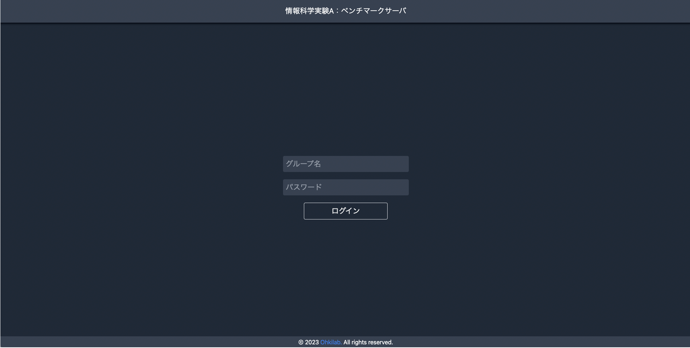
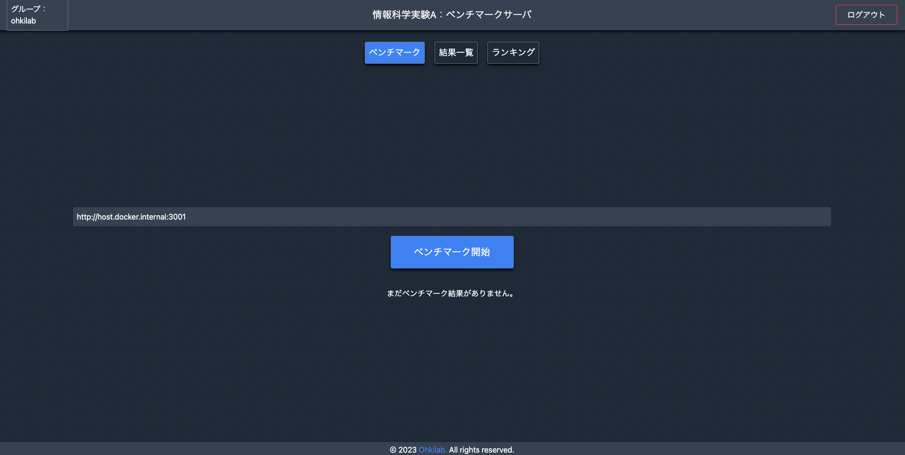
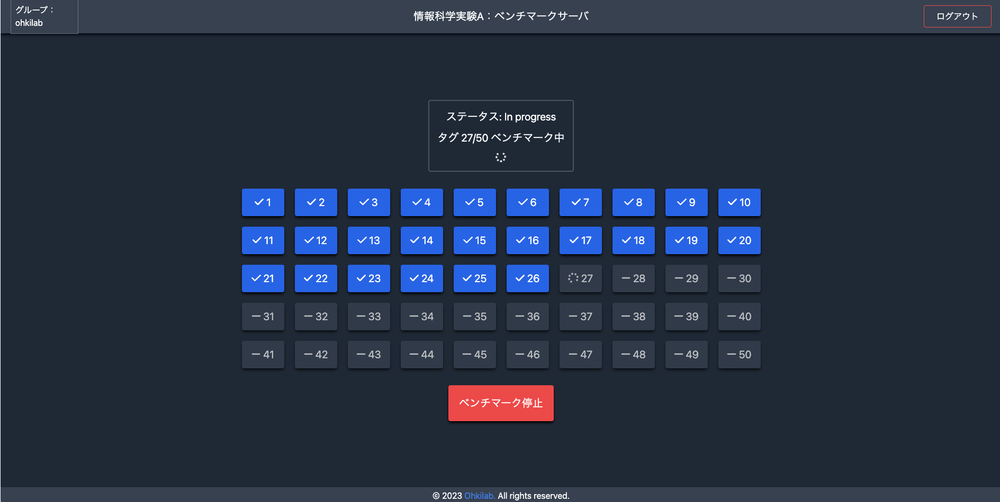
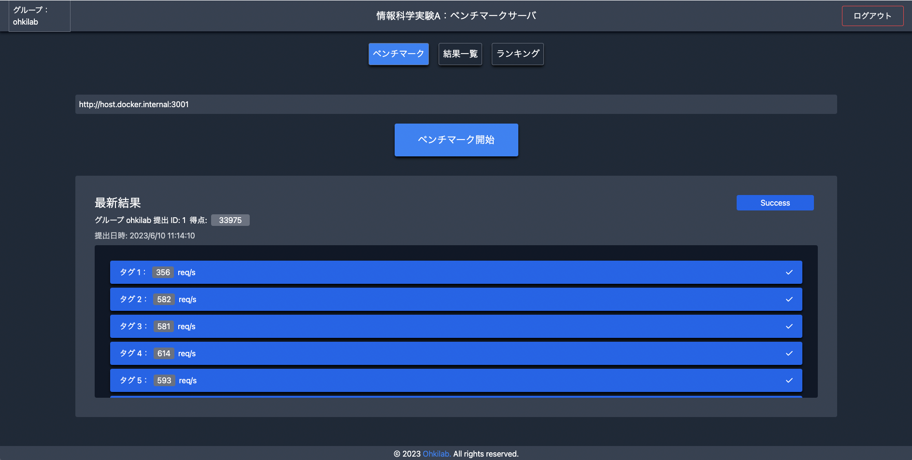
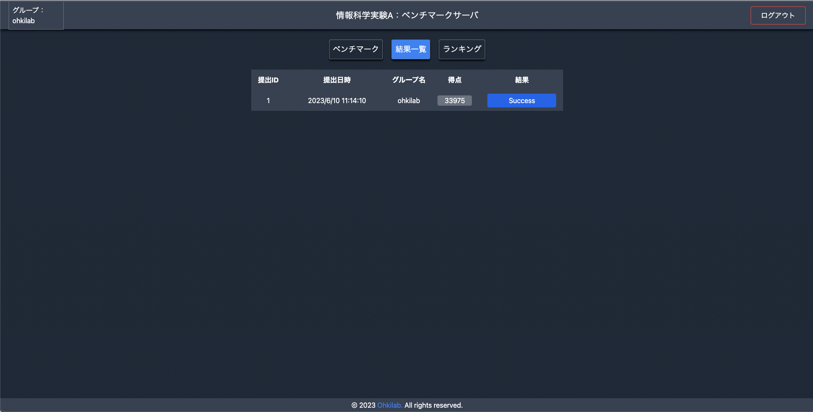
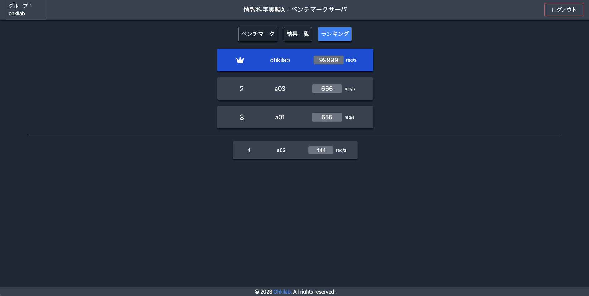
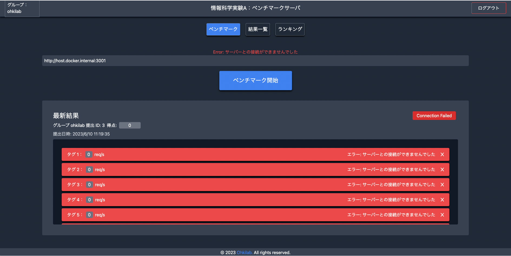
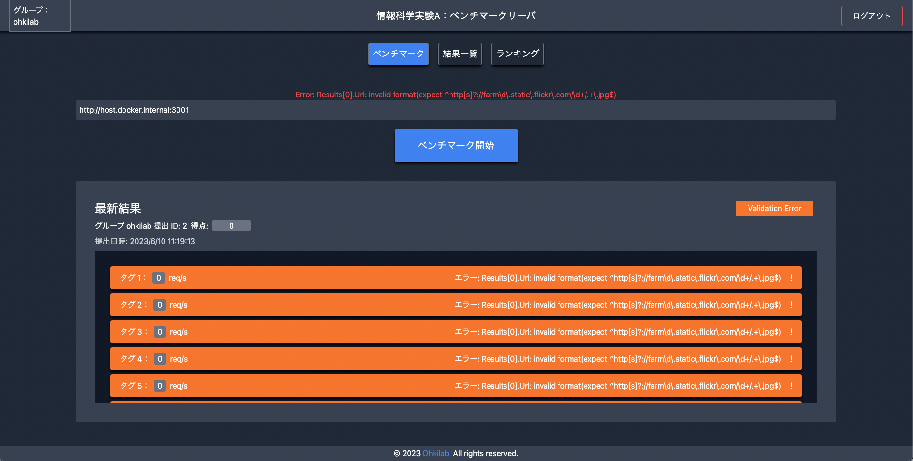
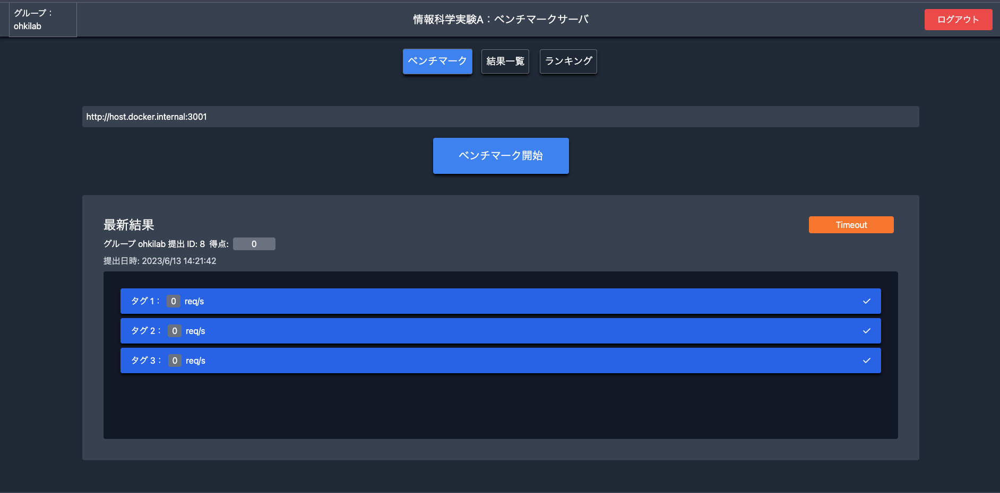

ベンチマークの方法#
概要#
みなさんが作成したWEBシステムの性能について，ベンチマークサーバを用いて評価します． WEBシステムからベンチマークサーバに計測リクエストを送信すると，ベンチマークサーバは，みなさんが作成したWebシステムに対して，大量の同時アクセスを行い，1秒あたりのリクエスト処理数といった性能を計測します．
Note
本ベンチマークは，学内ネットワークに設置したベンチマークサーバから，同じく学内ネットワークに設置された皆さんのRaspberry Piに向かって負荷を与えることで性能測定を行います．このため，皆さんの Raspberry Pi は学内ネットワークに接続されている必要があります．有線あるいは無線を用いて，学内ネットワークに接続した後，Raspberry PiがDHCPで取得したIPアドレスを確認しておいてください．
予選・本選ベンチマークサーバ#
ログイン#
ベンチマークサーバにアクセスします．（学内からでないとアクセスできません．アクセス先は本ページでは非公開です．Mattermost等でアナウンスしますのでそちらを確認してください）予選期間は予選ベンチマークサーバにのみ，本選期間は本選ベンチマークサーバにのみアクセス可能です．
{kind=link}
グループ名，事前に配布されたパスワードを入力してベンチマークサーバにログインしますs．
計測#
みなさんが作成したwebシステムのURLを入力し，「ベンチマーク開始」をクリックすることで計測が開始されます．
{kind=link}
WebシステムのURLは以下のようになると思います．
フォーマット：
http://<Raspberry PiのIPアドレス>/~<username>/<プログラム名>
入力例：
http://10.70.174.167/~pi/progA.php
なお，IPアドレスはRaspberry Piを学内ネットワークに接続した後に取得したIPアドレスに置き換えてください． IPアドレスは学内ネットワークに接続後，ターミナルで以下のコマンドを実行することで確認できます．
$ ip a
{kind=link}
上記の場合，10.70.174.167がRaspberry PiのIPアドレスとなります．
ベンチマーク開始ボタンをクリックするとキューに追加され，計測が開始します． 待ちがない場合は，そのままwebシステムの性能の計測を行いますが，先に性能を計測しているグループが存在する場合は，それらのグループの計測が終了するまで待機します．
{kind=link}
webシステムの計測が終了すると，計測結果が表示されます．
{kind=link}
また，結果一覧ページでも過去の計測結果を確認することが可能です．
{kind=link}
ランキング#
ランキングページで各グループのスコアランキングを見ることができます．
{kind=link}
他のグループに負けないような高性能なwebシステムの設計を目指しましょう．
ベンチマークサーバの仕様#
計測結果のステータス#
計測結果画面には，「Success」の他に，「Connection Failed」，「Validation Error」，「Timeout」ステータスについても表示されることがあります．
  {kind=link}
{kind=link}
{kind=link}
「Connection Failed」ステータスは，ベンチマークサーバとの接続に失敗した場合に表示されます．IPアドレスやサーバーの起動を確認してください． 「Validation Error」ステータスは，レスポンスの形式が異なる場合に表示されます．競技ルールを今一度確認してください． 「Timeout」ステータスは，決められた時間内にレスポンスが返却されなかった場合に表示されます．